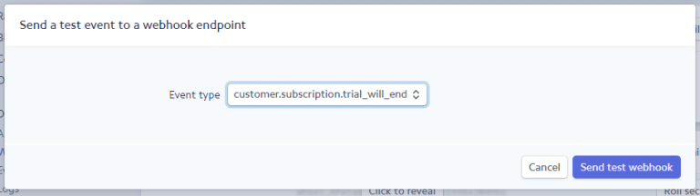
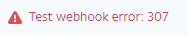
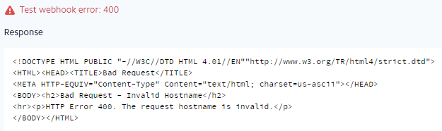
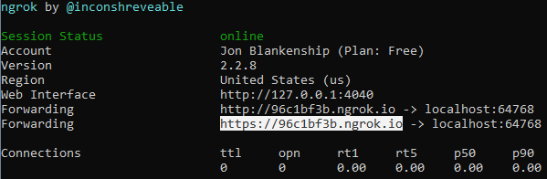
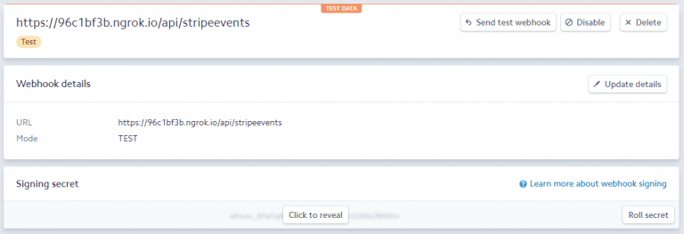
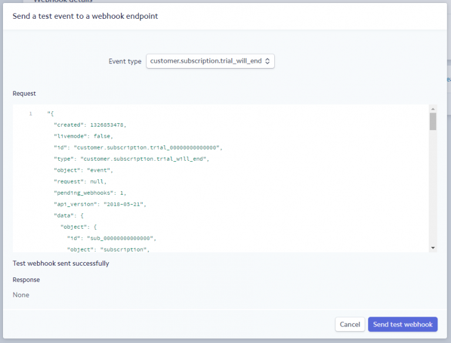
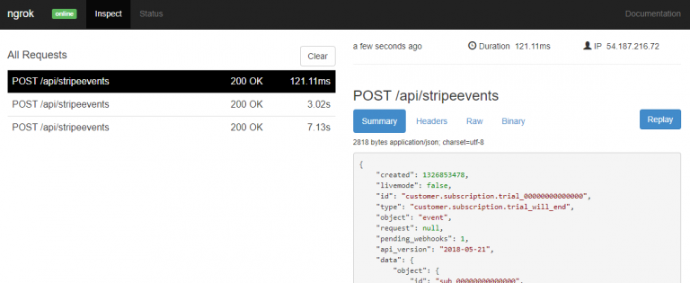

Testing Stripe Webhooks in an ASP.NET Core Project
I’m using Stripe for subscription management and payment processing for the the SaaS side project I’m currently working on. Stripe offers webhook functionality that allows you to register callback endpoints on your API with Stripe that they will call whenever any one of numerous specified events occur on their side.
So, for example, in my SaaS I’m offering customers a free 30-day trial period at the beginning of their subscription before they have to provide credit card information. I can register for the customer.subscription.trial_will_end event with an endpoint of my choice on my API, and Stripe will call that endpoint three days before the end of any of my customers’ trial periods with details about the given customer and their subscription. I’ll have logic on my side to check to see if we have a credit card for that customer yet, and, if not, send them a friendly e-mail reminding them that their trial is about to expire and they need to enter a credit card if they’d like to continue to use the service.

Stripe offers the ability through their dashboard to send test events to a webhook endpoint. As I worked on my integration this past week, I ran into a couple of small issues in getting the test events to reach my service running locally on my machine. So here’s a quick summary of what it took to get the messages flowing.
StripeEventsController
First we need a controller with an endpoint that Stripe will call into. I’m using a single endpoint to catch all events. It then delegates the processing of events to an IStripeEventProcessor. Here’s my endpoint:
[Route("api/[controller]")]
public class StripeEventsController : Controller
{
private readonly IStripeEventProcessor _stripeEventProcessor;
private readonly IEnvironmentSettings _environmentSettings;
public StripeEventsController(
IStripeEventProcessor stripeEventProcessor,
IEnvironmentSettings environmentSettings)
{
_stripeEventProcessor = stripeEventProcessor ?? throw new ArgumentNullException(nameof(stripeEventProcessor));
_environmentSettings = environmentSettings ?? throw new ArgumentNullException(nameof(environmentSettings));
}
[HttpPost]
public async Task<IActionResult> IndexAsync()
{
var json = await new StreamReader(HttpContext.Request.Body).ReadToEndAsync();
try
{
var stripeEvent = StripeEventUtility.ConstructEvent(json,
Request.Headers["Stripe-Signature"], _environmentSettings.StripeConfiguration.Value.WebhookSigningSecret);
await _stripeEventProcessor.ProcessAsync(stripeEvent);
return Ok();
}
catch (StripeException)
{
return BadRequest();
}
}
}
Note that I’m passing a WebhookSigningSecret to StripeEventUtility.ConstructEvent(..); this verifies that the event was actually sent by Stripe by checking the “Stripe-Signature” header value. The webhook signing secret can be obtained from Stripe > Developers > Webhooks > select endpoint > Signing secret.
Turn Off HTTPS Redirection in Development
I’m using HTTPS Redirection in my project to redirect any non-secure requests to their corresponding HTTPS endpoint. This caused me to receive an error whenever sending a test event: “Test webhook error: 307.”

Stripe expects to receive a 200-series status code back on all webhook calls, so the 307 Temporary Redirect status was a problem. To resolve this, I modified my Startup.cs to only use HTTPS Redirection when not in development mode, like so:
public void Configure(IApplicationBuilder app, IHostingEnvironment env)
{
if (env.IsDevelopment())
{
// snip...
}
else
{
// snip...
app.UseHttpsRedirection(); // <- Moved from outside to inside else block to allow ngrok tunneling for testing Stripe webhooks
}
// snip...
app.UseMvc();
}
ngrok
In order for Stripe to send test webhook events to our service, it needs to be able to connect to it. ngrok is a neat little utility that allows you to expose your locally running web app or service via a public URL. Download ngrok and install it, following the four getting started steps here.
When we’re ready to test, we’ll start up ngrok with the following command (where 64768 is the port number of your service):
ngrok http 64768 -host-header="localhost:64768"
It’s important to note that my service is configured to be accessible via the following bindings:
<binding protocol="http" bindingInformation="*:64768:localhost" />
<binding protocol="https" bindingInformation="*:44358:localhost" />
You want to specify the non-secure (non-HTTPS) port when starting up ngrok. It’s also important to specify the host-header flag; if you don’t, you’ll get a 400 Bad Request on all of your test calls:

Upon starting ngrok, you’ll see a screen like the following, indicating (in my case) that it is forwarding https://96c1bf3b.ngrok.io to my localhost:64768: 
Configure Stripe Webhook Endpoint and Test
Finally, you need to set up a Stripe webhook that points to your Stripe event handler endpoint exposed publicly via ngrok. This is done by navigating to the Stripe dashboard > Webhooks, and clicking “Add endpoint”. In my case, my endpoint looks like this:

Now we test our endpoint by clicking “Send test webhook.” If all goes as planned, you’ll see a successful response like the following:
You can also fire up http://localhost:4040/inspect/http in your browser and see a nice dashboard where you can inspect and replay all requests made through the ngrok public endpoint:

Congratulations! With just a few steps you’re now successfully sending test Stripe webhook events to your service running locally.
– Jon
I’m a developer and solo SaaS founder who likes to build things and share what I learn with others. If you’re interested software development, launching things, or random early morning thoughts, consider following me on Twitter or subscribe to my newsletter.
Thanks for reading!